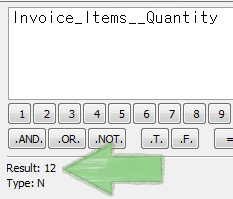
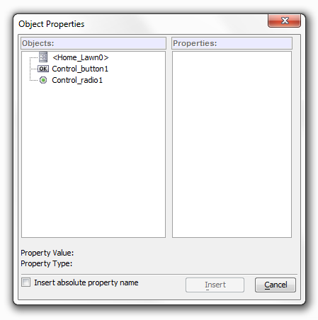

Expression Builder
Whenever you want to enter an
expression,
clicking the  icon you displays the Expression
Builder. The Expression Builder provides
access to all the inputs required to build any type of expression. This
includes... icon you displays the Expression
Builder. The Expression Builder provides
access to all the inputs required to build any type of expression. This
includes...
|
The Expression Builder
Finding the Expression Builder
You can access the
Expression Builder in a number of ways. From the
Control Panel you can find it by
first opening a Form,
Browse, or
Set. Go to Query at
the top of the screen and select Query by
Expression from the drop down menu. Alternatively, click
the Query by Expression button in
the toolbar at the top of the screen.

In either case, the
Query by Expression dialog will open. Click the
Expression Builder button
to
the right of either the Filter Expression
or Order Expression text boxes to
open the Expression Builder. From
the Web Project Control Panel you
can find the Expression Builder in the
Grid Builder. Click the Create a
new grid Component button
 and click OK on the Select
Grid Component Template dialog. The Grid
Builder will open, on the Design
page menu under Grid click on the
Data Source link and on the Data
Source page and select .dbf Tables.
Go back to the Design page menu and under
Grid click on Query(DBF). To
the right of the filter text box click the Expression Builder
button to open the Expression Builder. Note, you can not access
the Expression Builder through the Query(AlphaDAO) page. SQL
relies more heavily on expressions built through arguments than
do .dbf files, which leans more on variables.
and click OK on the Select
Grid Component Template dialog. The Grid
Builder will open, on the Design
page menu under Grid click on the
Data Source link and on the Data
Source page and select .dbf Tables.
Go back to the Design page menu and under
Grid click on Query(DBF). To
the right of the filter text box click the Expression Builder
button to open the Expression Builder. Note, you can not access
the Expression Builder through the Query(AlphaDAO) page. SQL
relies more heavily on expressions built through arguments than
do .dbf files, which leans more on variables.

|
Toolbar Functions
 |
Copy |
Allows you to highlight and copy anything in the
Expression Builder's work area |
 |
Cut |
Allows you to cut expressions or parts of expressions |
 |
Paste |
Allows you to Paste parts of expressions you cut. |
|
Undo |
Undoes an action. |
 |
Redo |
Click to do something that what undone |
|
Fonts/Auto help Settings |
Lets you set font and autohelp settings for the
expression builder |
|
Keyboard |
Toggles the Expression Builder keyboard on and off. The
keyboard is below the editing window |
 |
Add Expression to Library |
Opens the
Expression
Library which allows you to store and retrieve frequently used
expressions |
Result and Type
The Expression Builder automatically evaluates every expression
and displays the value and data type of the result. This prevents you from
trying to use an invalid expression. You can see the Result and
Type for the current
expression displayed in the lower middle portion of the dialog. This works
even if there is only one entry in the builder. For Example, if
there is a report on field that has a value of the number 12,
you will see Result: 12, Type: N appear in the Expression
Builder. Type abbreviations for Xbasic include
N (Numeric),
C (Character), D (Date), L (Logical), P (Pointer), T
(Time), B (Blob), U (Collection), A (Any type), Integer (32 bit
integer), Short (16 bit integer), {YourType} (A user defined
type)
|

The result of a reports value
A Basic Expression
1. Open the Expression Builder and write
12 in the Builder's work area. The Expression
Builder automatically assigns a Numeric Type and a
Result of 12.
2. Add a multiply sign * to your expression, using
either your keyboard or the Expression Builder Keyboard's multiply button.
3. Add another 12 to the end expression. The Result:
is of course 144.
Auto Complete
The Expression Builder uses "auto-complete"
technology to help you write functions. The Bubble Help shows a list of functions that start with
the letters you type. As you type more letters, the list of possible
functions gets
narrowed down. The Expression Builder
shows the syntax for each function and prompts you for each
of the function arguments. Functions are color coded so that the expressions they are placed in are easier
to read.

Auto-complete feature helps with the syntax of Xbasic functions.
|
Using Fields in Expressions
The Expression Builder makes it easy to insert
different fields into an expression, simply hit F2 to open the
Select Field dialog and click on
the field you want to insert. Once a field is inside an
expression, you can then evaluate that expression's
Result and
Type. If the inserted field contains multiple records you
can use the navigational buttons to move between and evaluate
each record individually.

|
|
First |
Evaluates the first record in a given field in an
expression |
|
|
Previous |
Evaluate the expression for the previous record. |
|
|
Next |
Evaluates the expression for the next record in a
given field |
|
Last |
Evaluates the expression for the last record in a field. |
The current record number
being evaluated is displayed below the navigational buttons next to the
Record: button. If you click the 'Record:'
button you will open the Record Number dialog.
If there is a specific record number you want to evaluate, you can type that
number into the 'Evaluate Expression for Record Number'
textbox and the Expression Builder will evaluate that record.

Skip to any record in a field
|
Insert a Field Name into an Expression:
Position the cursor
within the expression.
Double click Field Name or click F2 to
display the Select Field dialog box.
-
Optionally click
to sort the list in ascending or descending order.
-
Select the field
name you want to insert and click Insert.
Field Names in an Expression
Insert a Field Value into an Expression:
Position the cursor
within the expression.
Double click Field Value or click F3
to display the Select Field dialog box.
Optionally click
A-Z to toggle between record number order and
a sorted view showing unique keys only.
To list records in
ascending or descending order click the field title at the top of the record list.
Here the field title is Customer_Id
Descending order
Ascending order
-
Select a field
name and value. Click Insert.
Inserted Field Value for a Phone Number
Select Calculated Field:
To insert a calculated field into an expression
first position the cursor
within the expression.
Double click Calculated Field or click F5
to display the Select Calculated Field dialog
box.
Optionally click
A-Z to sort the list in ascending or descending
order.
Select the calculated
field and click Insert.
Using Functions in Expressions
You can insert functions into expressions. As
noted earlier, there is also an auto complete for functions.
|
Insert a Function
Position the cursor
within the expression.
Double click Function or click F4 to
display the Function Finder dialog box.
Select the function
and click Insert.
Using Arguments in Expressions
If you are working with .dbf files you can create arguments using the
Define Arguments dialog. Once you have defined an argument
you can then use it in the Expression Builder. Used in
conjunction with the fields in your grid this can be quite
powerful.
|
Insert an Argument
1. First define an argument in the
Define Arguments dialog.
2. Next, Open the
Expression Builder.
3. In the Expression Builder you
will now see an Argument option, double click
it or click F10
4. You should now see
the argument appear in the Expression Builder.
When you insert an argument a : character is
automatically added to the expression to mark it as an argument.
Using Variables
The available categories will depend on the context in which the expression
builder is invoked. However, all contexts will have these contexts: Global and
Session. A global variable is visible throughout Alpha Anywhere. For example, if
the variable is defined by a script in one form, then any other form in
your Alpha Anywhere session has access to that variable. A session variable is visible throughout an Alpha Anywhere session. A session
is created when you open a new window in Alpha Anywhere (e.g. a new form,
or browse window). All scripts on a form, for example, have access to
a session variable. If you swap the layout displayed in a window (for example, by pressing the F8 key while viewing a form, to switch to a browse
view), session variables remain visible to the new layout displayed in
the window (because it is still the same session). If the Expression Builder is invoked from
within a Layout, then the Layout category is available. A Layout variable is visible to all scripts and expressions in a form,
but if the Layout in the window is swapped (for example, by opening a
new form in the same window, or switching to a browse view), then the
Layout variables are no longer available.
Select
Variable dialog
|
Insert a Variable
-
Position the cursor
within the expression.
Double click Variable or click F6 to
display the Select Variable dialog box.
Select the scope of the
variable in the Category list, either
Global or Session.
-
Select the variable
you want to insert from the Variable list and
click Insert.
Using a System Field in an Expression
You can insert system fields into your
expressions by hitting the F7 key
and selecting a field from the System
Fields dialog. System fields include Date, Unbound, Page
Number, Page x of y, Page Count, Current Order, Current Filter,
Layout Name, and Data Source. Date
allows you to insert the current date into an expression.
Unbound means there is no field
associated with it. Data Source
will insert the file path of the current table into your
expression.
The System Fields Dialog
|
Insert a System Field
Position the cursor
within the expression.
Double click System Field or click F7
to display the System Fields dialog box.
Select the field
and click Insert.
A System Field and Result
Using the Expression Library
The
Expression Library lets you store expressions. If you
complete an expression that might have current or future use,
click the
'Add Expression to Library' button
twice to add it to a library. The 'Add
Entry to Expression Library' dialog will open and ask you
to name your expression. It will also ask you to select one of
three libraries for the expression to live in. The options are
the Current Table/Set, the
Current Workspace, or the
Global Library. This is mainly a
question of whether you want your entry to be viewed from other
Tables and or Sets in your Workspace, or not, or if you want
your expression to be visible from all of your workspaces.
|
Add an Expression to a Library
1. In the
Expression Builder, click the Add Expression to
Library button
.
2. In the drop-down that opens
click the Add Expression to Library option, if
you highlight your expression you get a second choice here.
3. Select a
library to add your expression to under the 'Add to
which Library?' question. Select Current Table/
Set. This will make the expression is only be visible in the current
table's library.
4. In the Add Entry to Expression
Library dialog enter the name of your expression where it says 'Enter
description for Library Entry:'. Click OK.
5. You should now be able to see
your expression when you double click Library
Entry or hit F9 in the Expression
Builder.
Insert an Expression from a Library into an Expression:
Position the cursor
within the expression.
Double click Library Entry or click F9
to display the Expression Library dialog box.
-
Select the expression
and click Insert.
The Expression Library shows Expressions and their
descriptions
Object Properties
"Object Properties" appear in appropriate contexts
in Desktop workspaces. You will not see or use these properties
in the Grid Builder or the Web Project Control Panel, only in
the Control Panel. If
you are building a calculation value expression for a form or a
browse layout, or are defining an expression in Action Scripting for
an action that is bound to an event on a form or a browse, the
Object Properties category will allow you to refer to any property
of any object on the layout.
|

Insert an Object into an Expression.
1. Open
the Control Panel. Open a
Form and go to Design mode .
2. Go to the
Task List drop down and click on
Toolbox to open the Toolbox, if it is not
already open.
3. Scroll down the
Toolbox list until you get to
'Button',
click it. Then drag out an area inside your the form to place the button.
4.
Save your edit and close
Design mode.
5. With the form open,
go to the Expression Builder by clicking on
Query, selecting
Query by Expression, and clicking the
Expression Builder button.
6. Press
F8 to open the Object
Properties dialog.
7. In the
Objects list click on the Button you created,
then go over to the Properties list and select
a property to insert.
8. Click
Insert.

See Also
Writing Expressions